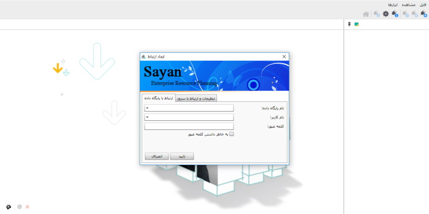
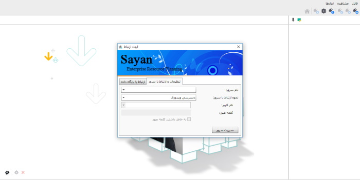
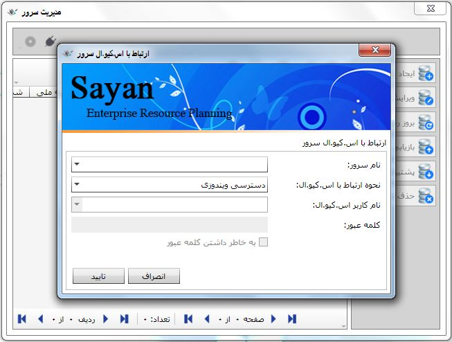
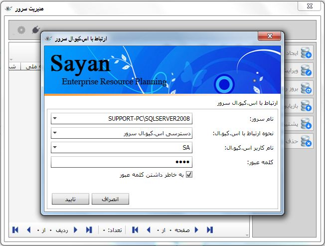
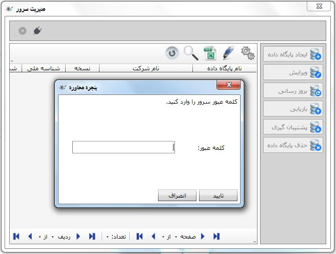

برای شروع کار با نرم افزار سایان وقتی نرم افزار را اجراء می کنید، با صفحه ایجاد ارتباط روبرو می شوید که دارای پنجره ای با دو تب«ارتباط با پایگاه داده» و «تنظیمات و ارتباط با سرور» است. اگر پایگاه داده ای از قبل ساخته اید، نام پایگاه داده را از کادر مربوط به آن انتخاب و سپس نام کاربر و کلمه عبور را وارد نمایید، با کلیک روی دکمه تایید وارد صفحه اصلی برنامه خواهید شد.
اگر برای اولین بار است که نرم افزار را اجرا کرده اید، پنجره ایجاد ارتباط به شکل زیر برای شما به نمایش درمی آید:
برای انجام تنظیمات و ایجاد پایگاه داده به تب «تنظیمات و ارتباط با سرور» بروید و روی «مدیریت سرور» کلیک کنید:
حال پنجره «ارتباط با اس.کیو.ال سرور» باز می شود، در این قسمت چهار فیلد وجود دارد که باید با قواعد زیر اطلاعات آن ها را تکمیل نمایید:
نام سرور: در این قسمت نام اس.کیو.الی را که برای کار با نرم افزار به آن متصل می شوید را مشاهده می کنید حال ممکن است از طریق شبکه به اس.کیو.ال متصل شوید و یا اس.کیو.ال بر روی خود سیستم شما نصب شده باشد.
اگر پنجره مقابل نام سرور را باز کنید می توانید با کلیک بر روی گزینه نام سرور خود را جستجو کنید در صورتی که اس.کیو.الی روی سیستم یا شبکه نصب باشد سیستم آن را پیدا می کند.
نحوه ارتباط با سرورمی توانید در این قسمت پس از پیدا کردن سرور نحوه ارتباط با سرور را مشخص کنید، با باز کردن فیلد کشویی مقابل نحوه ارتباط با سرور با دو گزینه «دسترسی ویندوزی» و «دسترسی اس.کیو.ال سرور» مواجه می شوید. در دسترسی ویندوزی دسترسی فقط از طریق کاربر ویندوز بوده و دسترسی کاربر محدود می باشد. این روش دسترسی امنیت بالایی ندارد زیرا هر کاربر ویندوز می تواند به پایگاه داده شما (اگر دارای پسورد نباشد) دسترسی پیدا کند. اما در دسترسی اس.کیو.ال سروری محدوده ارتباط وسیع تر است و فقط مختص به کاربر ویندوز نمی باشد. گزینه دسترسی اس.کیو.ال سرور را انتخاب کنید.
نام کاربر/ کلمه عبورنام کاربر مورد نظر را که در زمان نصب برنامه ثبت کرده اید انتخاب کنید و کلمه عبور مربوط به آن کاربر را وارد نمایید. فرم تکمیل شده به شکل زیر می باشد:
در شکل بالا پس از بررسی موارد گفته شده، با کلیک روی گزینه «تایید» صفحه وارد کردن پسورد برای ورود به منوی مدیریت سرور باز میشود :
سوال : مشکلی در انجام عملیات از طریق اس.کیو.ال سرور پیش آمده است.
جواب : امکان دارد سرویس های اس کیو ال متوقف شده باشد. برای راه اندازی آن ها بر روی My Computer کلیک راست کرده و Manage را انتخاب کنید. و از قسمت Services and Applications گزینه Services را انتخاب کنید پس از وارد شدن به این قسمت بر روی سرویس های اس کیو ال دو بار کلیک کنید و دکمه استارت را بزنید.